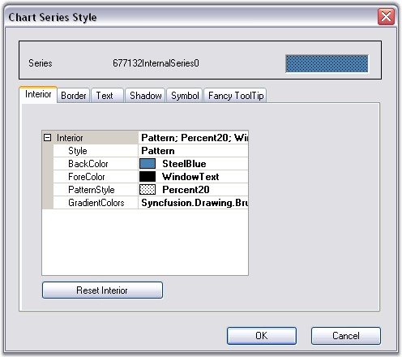
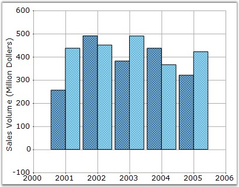
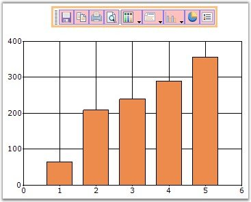

Setting Styles for the Chart through the Toolbar
Click the Styles icon in the toolbar to open the Chart Series Style dialog box. The following are the settings available in this dialog box.
· Interior color for the series can be set using the options available in the Interior tab.
· Border properties using Border tab.
· Text for the series can be enabled and also customized using the Text tab.
· Shadow for the series can be enabled and customized using the Shadow tab.
· Series can hold customized symbols using the Symbol tab.
· FancyToolTip can be enabled using the options available in the Fancy ToolTip tab.
The below image shows how to set the interior properties through "Interior" tab in the Chart Series Style Window. This can be invoked by clicking "Styles" command.

Figure 298: Chart Series Style Window to set Interior Properties

Figure 299: Chart after setting Interior Properties
Toolbar Appearance
Toolbar provides an option to set different back color, border style, button back color and button fore color.
User can enable or disable the Border line of Toolbar by using ShowBorder property in the Toolbar instance.

Figure 300: Toolbar with Border
Toolbar Behavior
The docking behavior of the Toolbar can be controlled using Toolbar.Behavior property.
|
Toolbar Property |
Description |
|
Behavior |
Specifies the docking behavior of the toolbar. Docking - It is dockable on all four sides. Movable - It is movable. All - It is movable and dockable. None - It is neither movable nor dockable. |
|
[C#]
this.chartControl1.ToolBar.Behavior = ChartDockingFlags.All; |
|
[VB.NET]
Me.chartControl1.ToolBar.Behavior = ChartDockingFlags.All |
 Note: You can display or hide a toolbar while
printing a Chart. See Printing And Print
Preview topic for more details.
Note: You can display or hide a toolbar while
printing a Chart. See Printing And Print
Preview topic for more details.